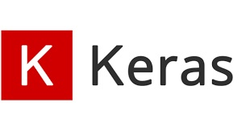
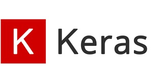

I am interested in technology. However there is no such good place to learn deep learning nearby especially for kids. I have tried differenct ways such as doing it in laptop; colab; and jetson nano etc. They all can allow me doing a certain level of GPU training. However, I find that it is hard to using all different frameworks working together such as Tensorflow; Pytorch; TensorRT and networks such as yolov; resnet and mobilenet in one single platform. In order to make it convenient; portable and simple for kids. I make up this project. After development of single platform, I hope to create an innovative way of picking up knowledge with fun activities for kids
Learning codes, I believe that line by line is the easiest way for kids and Jupyter notebook is the best choice as it can allow you to visualize the result of running codes by line or bunch of lines. Although GPU is preferred, we don't need much as we could use light network or smaller image size to finish one training within the time those kids can stand for. For the cost of hardware, a laptop with GPU of entry level should be US$800 around. However, laptop should be for general multiple purposes and it is hard for kids using purely Linux environment. Colab is very helpful but it is not for TensorRT. Put all together, I choose Jetson nano. First, its cost in $US100 should be affordable for parents or school to invest. It doesn't have hard drive but a micro SD. Since we only need an environment of learning instead of data storage, micro SD is preferrable and it is easy to manage. By default, Jetbot kit comes with few training chapters for learner to warm up. Jetbot can act as robot with motors; cameras and other I2C componeents. Further Jetson nano can be offline to practice if necessary data has prepared. Therefore I don't see others to beat it.
If you are planning to let your children or students to learn with Jetbot while you want to use it as a single platform for different AI Experiement Exercises, you can contact me via email. You can make you own choice of picking up the online supplier for Jetson Nano or Jetbot, I guide you configuring the environment based on the standard Jetson Nano package (JetPack 4.4.1). Also, I will keep on to consolidate more examples and debug it to adapt to Jetbot environment if necessary. I have included original URL at the top of each exercise as you may want to find more detail from arthur's original page. For shopping the Jetbot, you can refer to the one as in the photo.
Here I want to say thank you to those guys who originally publish the exercises which are very helpful for me. I hope to make it further to benefit more learners in future especially for kids.

 
